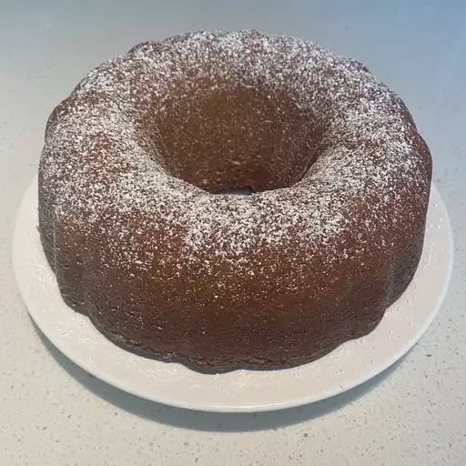

Butter Cake

Description
This Kentucky butter cake is moist with a luscious butter sauce. It's made from readily available ingredients.
Ingredients
Cake
- 3 cups unbleached all-purpose flour
- 2 cups white sugar
- 1 teaspoon salt
- 1 teaspoon baking powder
- ½ teaspoon baking soda
- 1 cup buttermilk
- 1 cup unsalted butter, softened
- 4 large eggs
- 2 teaspoons vanilla extract
Butter Sauce
- 3/4 cup white sugar
- 1/3 cup unsalted butter
- 3 tablespoons water
- 2 teaspoons vanilla extract
Steps
- Gather all ingredients.
- Preheat the oven to 325 degrees F (165 degrees C). Grease and flour a 10-inch Bundt pan.
- Make the cake: Mix flour, sugar, salt, baking powder, and baking soda together in a large bowl. Blend in buttermilk, butter, eggs, and vanilla with an electric mixer. Beat for 3 minutes on medium speed. Pour batter into the prepared pan.
- Bake in the preheated oven until a wooden toothpick inserted into the center of the cake comes out clean, about 1 hour.
- When the cake is almost finished baking, make the butter sauce: Combine sugar, butter, water, and vanilla in a saucepan over medium heat. Cook and stir until fully melted and combined; do not boil.
- Remove the cake from the oven. Prick holes in the still-warm cake, then slowly pour butter sauce over the top.
- Let cake cool before removing from pan, about 30 minutes.
- Enjoy!